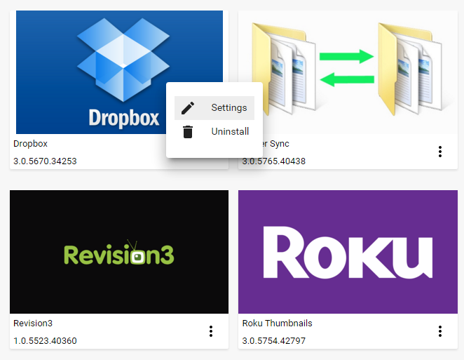
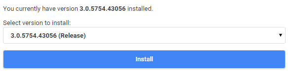

Plugins Overview
Plugins extend the functionality of Emby by providing additional features and services. To manage your plugins, open the server dashboard and navigate to Plugins.
My Plugins
The my plugins tab displays your installed plugins. Clicking the dot menu on a plugin will allow you to configure it (if applicable), or uninstall it.

If a plugin does not require any configuration, there will not be a Settings button within it's command menu.
Catalog
The catalog allows you to browse and install new plugins. Some of the available categories are:
Channels - Internet channels provide access to streaming audio or video. For more information, see Channels.
Content Providers - Allows new kinds of media to be added to the library, such as books and games, or allows downloading of related content for existing media.
Live TV - Provides access to live tv channels. For more information, see Live TV.
Metadata - Adds new metadata scrapers or filters.
Notifications - Adds new notification targets for use with the notifications feature. For more information, see Notifications.
Social Integration - Access to social networking features.
Installing Plugins
To install a plugin, click on one within the plugin catalog. The plugin detail page will then contain an installation button.

Click the Install button install. After the installation has completed, the server will need to be restarted.
Manual Install of Plugins
Sometimes you may need to install a plugin manually. It could be because there is a new pre-release version made available in the forum or a plugin that is not in the catalogue.
The installed plugins are stored in the "plugins" directory which is below the Emby Server Data Folder.
See this article for where the Emby Server Data Folder is for the various platforms. The "plugins" folder is directly below this folder.
Ensure that Emby Server is shut down when updating plugins.
If you are replacing a previously installed version of the plugin, first rename the existing plugin dll file. Lets use the Emby WebStreams Plugin as an example.
So rename the existing "Emby.WebStreams.Plugin.dll" to "Emby.WebStreams.Plugin.dll.old"
If the plugin that is to be installed is in a zip file, unzip it and locate the dll file. Then copy the dll file, eg "Emby.WebStreams.Plugin.dll" to the "plugins" directory.
Now you can launch Emby Server.
Note
On Linux and NAS platforms, you may need to change and set permissions and ownership of the dll file. Make sure it is the same as for other plugin dll's in this directory.
Popular Plugins
The plugin catalog has a vast library of plugins available. Below are some of the more popular choices:
- Cover Art - Enhance your media images
- GameBrowser - Adds game support to Emby.
- Trailers - Stream internet trailers
- Trakt - Provides integration to the trakt service